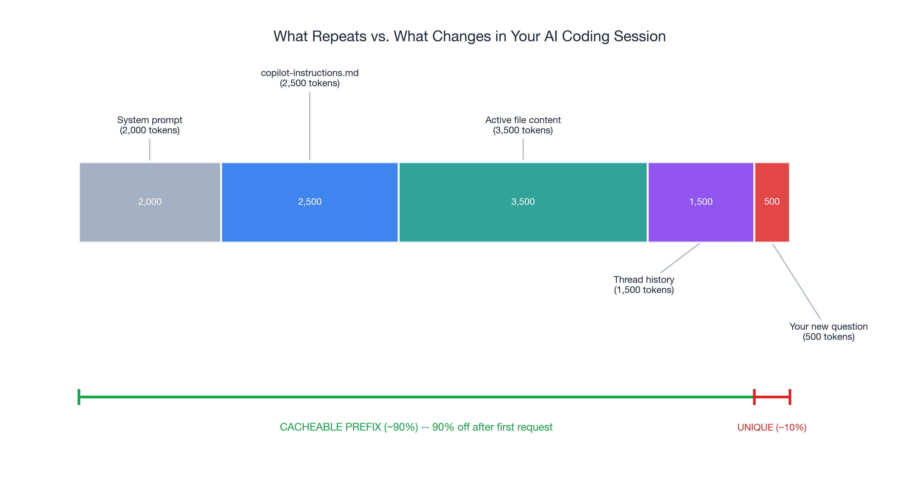
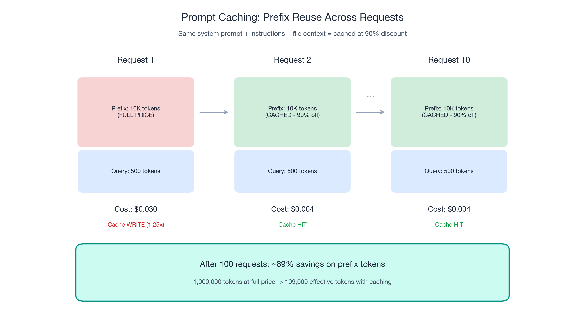
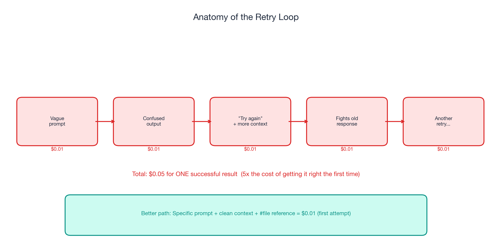
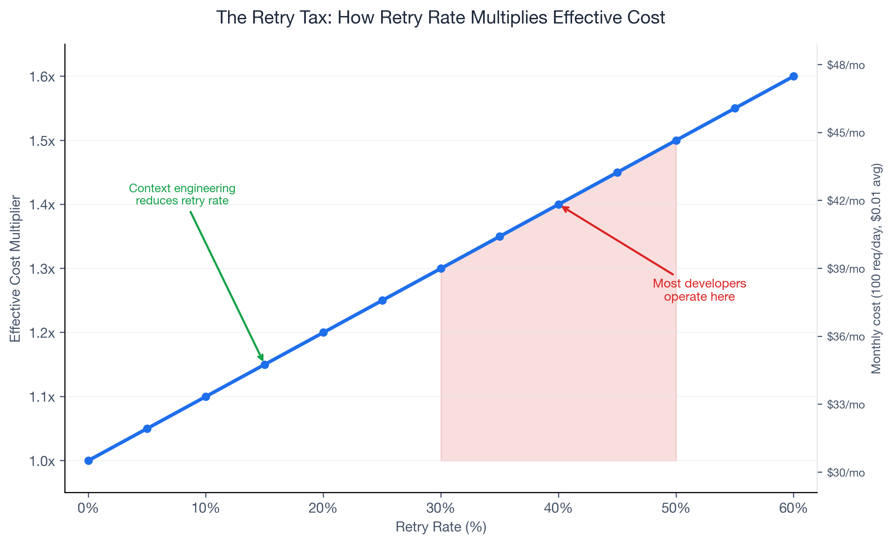
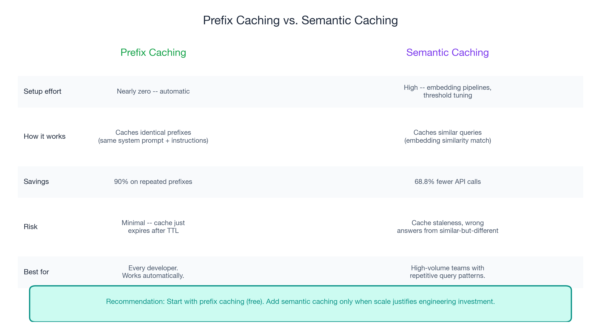

Part 2 of 3 in the "Engineering Better AI Code Assistant Interactions" series. Previously in Part 1: Five context engineering practices that improve AI code assistant output quality — while spending fewer tokens.
The 90% Discount You Are Not Using
OpenAI and Anthropic both offer a 90% discount on cached input tokens. If you have never heard of AI code assistant prompt caching, you are not alone — and you are paying full price for repeated context every single time.
In a typical coding session, roughly 90% of your prompt input is identical across requests: system prompt, copilot-instructions, active file content. Only your specific question varies. Without caching, full price every time. With caching, 90% less for tokens the provider has already processed.
Part 1 covered context engineering — giving AI better input. This post covers the structural layer on top: caching that clean context so you stop paying for it repeatedly, and workflow discipline that prevents the good habits from eroding.
The savings here are invisible. You will not feel them in a single prompt. But they compound across every request in every session, every day. For a developer making 100+ AI interactions per day, the cumulative effect is substantial.

How Prompt Caching Works for AI Code Assistants: Same Prefix, Fraction of the Cost
Prompt caching is straightforward. When consecutive prompts share a common prefix — the same system prompt, the same instruction files, the same contextual setup — the provider caches those tokens on first processing. Subsequent requests that match the cached prefix get charged dramatically less.
- OpenAI: Cached input tokens at 90% off. Caching happens automatically.
- Anthropic: Cached reads at 90% off. First-pass cache write costs 1.25x (amortized across subsequent reads).
- TTL: Typically 5-10 minutes. Each matching request resets the TTL.
The math
A 10,000-token stable prefix over 100 daily requests:
| Full price | With caching | |
|---|---|---|
| Prefix tokens processed | 10,000 × 100 = 1,000,000 | 10,000 + (99 × 10,000 × 0.1) = 109,000 |
| Effective prefix cost | 100% | ~10.9% |
| Savings | — | ~89% on prefix tokens |
By request 10, the prefix is essentially free.
Maximize cache hits
- Keep your copilot-instructions file stable. Editing it mid-session invalidates the cache and the next request pays full price.
- Group related questions in the same thread. Each message extends the shared prefix. Switching threads resets it.
- Structure context with stable elements first. System prompt, then instructions, then file content, then your query.
- Avoid unnecessary context churn. Adding and removing files repeatedly invalidates cache portions.
A critical connection to Part 1: the five context engineering practices enable better caching. Clean context is cacheable context.

The Retry Tax: Reduce AI Coding Retries to Cut Costs
Caching reduces the cost of good requests. Workflow discipline reduces the number of bad requests. The combination is multiplicative.
If 40% of your AI code assistant requests need a follow-up, your effective spend is 1.4x baseline. At 50%, it is 1.5x. Retries are the most expensive form of wasted tokens — full-price requests that produced zero usable output.
GitHub's official guidance: “garbage in, garbage out.” A vague prompt produces a vague answer, which triggers a retry with more context, which fights the original wrong answer still in the chat history.

Five disciplines that reduce retries
- One task per prompt. Split bundled requests into focused ones. Three focused requests often cost less than one unfocused request plus two retries.
- Diagnose before retrying. Was the context wrong? The prompt ambiguous? A targeted follow-up beats a blind retry.
- Structured commit messages and PR descriptions. Clean metadata becomes better AI context for future tasks.
- Clean project structure. Meaningful directories and file patterns let the model infer architecture from structure.
- Measure cost per successful task, not cost per request.
| Retry rate | Effective cost multiplier | Monthly impact |
|---|---|---|
| 0% | 1.0x | $30.00 |
| 20% | 1.2x | $36.00 |
| 40% | 1.4x | $42.00 (+40%) |
| 50% | 1.5x | $45.00 (+50%) |
| 60% | 1.6x | $48.00 (+60%) |
Most developers operate in the 30-50% retry range without realizing it.

Beyond Prefix Caching: Semantic Caching
For high-volume AI workflows, semantic caching stores responses to semantically similar queries. Redis claims up to 68.8% fewer API calls and 40-50% latency improvement. The trade-off: significant engineering investment, cache staleness risk, and tuning overhead.
When it makes sense: repetitive team patterns, high-volume internal Q&A, and when AI API spend justifies engineering effort.
When it does not: novel code generation, debugging sessions, architecture discussions.
Prefix caching is nearly free and automatic. Semantic caching is an engineering investment. For most developers, prefix caching delivers the majority of savings.

Set and Forget: Your Part 2 Action Plan
- Stabilize your copilot-instructions file. Do not edit mid-session.
- One thread per task. Maximizes cache hits and prevents stale context.
- Diagnose before retrying. Fix the input, do not retry blindly.
- Stable context first, specific query last. Caching-friendly prompt structure.
Coming Up Next
In Part 3: "The 120x Spread", I cover the multiplier table — from GPT-5.4 nano at 0.25x to Claude Opus 4.6 fast mode at 30x. The task taxonomy, auto-selection, team governance, and the complete three-layer playbook.